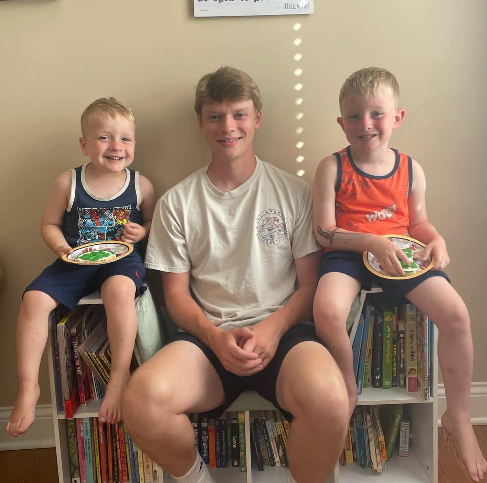

About Jack
Born and raised in the charming town of Palos Heights, Illinois, I was the eldest of six siblings — with one sister and four brothers who always kept life interesting. I cherish the memories of growing up there, where my days were filled with neighborhood adventures, hours spent playing video games, and a deep dive into creative endeavors like video editing. In fact, one of my most memorable accomplishments from those days was creating a Patrick Kane montage video in 7th grade. It unexpectedly went viral, amassing over 150k views on YouTube, a feat that still brings a smile to my face.
My journey continued at Marist High School, graduating in the class of 2021. Here, I wore many hats: I represented my peers as a student ambassador, honed my team spirit playing on the lacrosse team, and nurtured my growing interest in finance and analytics. Outside school, I worked at the Palos Pool as an attendant and spent summers maintaining the greens at Cog Hill Golf and Country Club. These experiences weren't just jobs; they were opportunities to prepare grounds for prestigious events like the Junior PGA tournament and to indulge in my newfound passion for golf.
Currently, I'm a junior at the University of Iowa, pursuing degrees in Finance and Business Analytics. Living on Melrose Court, right by the football field, I'm at the heart of the campus's vibrant energy, especially on game days. As a fervent supporter of Hawkeye football, I share this passion with my four roommates, making every match an event to look forward to. Balancing academics and leisure, I'm actively involved in the investment club, where I connect with like-minded students, and work for the parking and transportation department, contributing to the smooth running of our campus.
This journey from Palos Heights to the University of Iowa is more than just a change of location; it's a testament to my growth, my ambitions, and the experiences that have shaped who I am today. Each chapter of my life, from creating viral content to working on the golf course, and now immersing myself in university life, reflects my adaptability, team spirit, and eagerness to embrace new challenges.
Favorite Quotes
- "We are what we repeatedly do. Excellence, therefore, is not an act, but a habit." ~ Aristotle
- "A life ain't a life 'til you live it" ~ Mac Miller
- "You don't become confident by shouting affirmations in the mirror, but by having a stack of undeniable proof that you are who your say your are. Outwork your self doubt." ~ Alex Hormozi
Hobbies
- Playing pool
- Playing bad golf
- Going to hockey and baseball games
- Listening to podcasts
- Poker
Favorite Movies and TV Shows
- Good Will Hunting
- The Big Short
- Harry Potter
- Braveheart
- Anchorman 2
- Interstellar
- Saving Private Ryan
- The Office
- Game of Thrones
- Succession
Top Ten Artists and Bands
- Mac Miller
- Zach Bryan
- Drake
- Kanye West
- The Lumineers
- Led Zeppelin
- Pearl Jam
- Pink Floyd
- Tyler Childers
- The Rolling Stones
Me with my mom, step dad, brothers (Emmett and Brody), and sister (Priscilla)
Me with my brothers (Keegan and Finn)